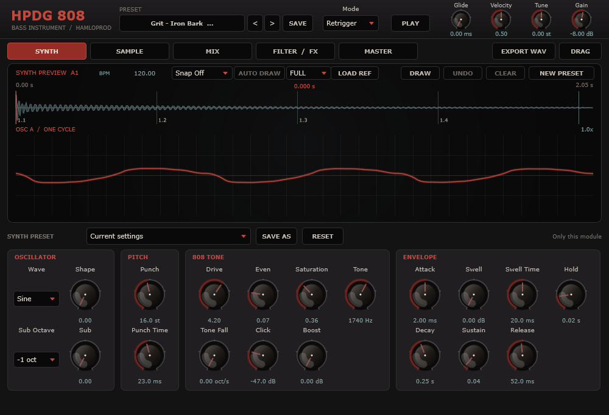
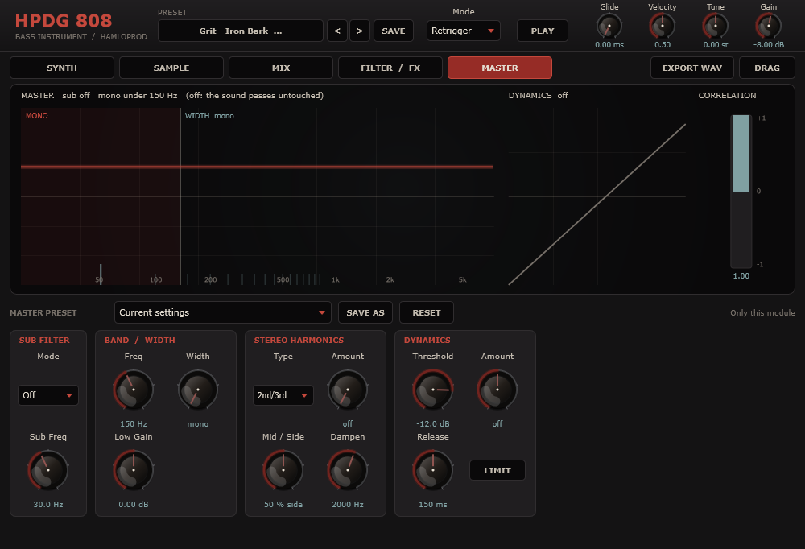
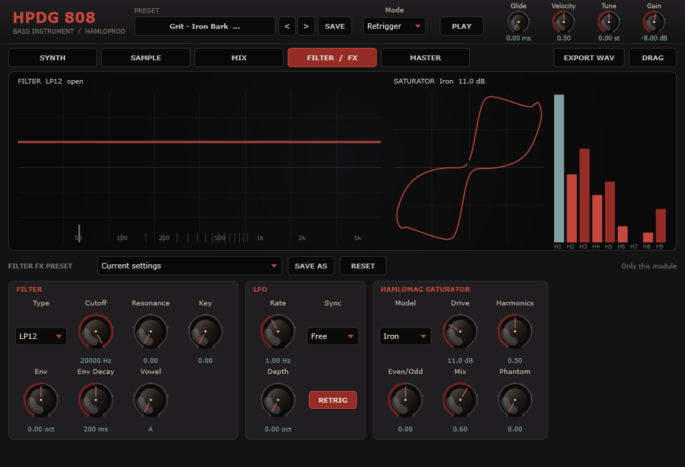
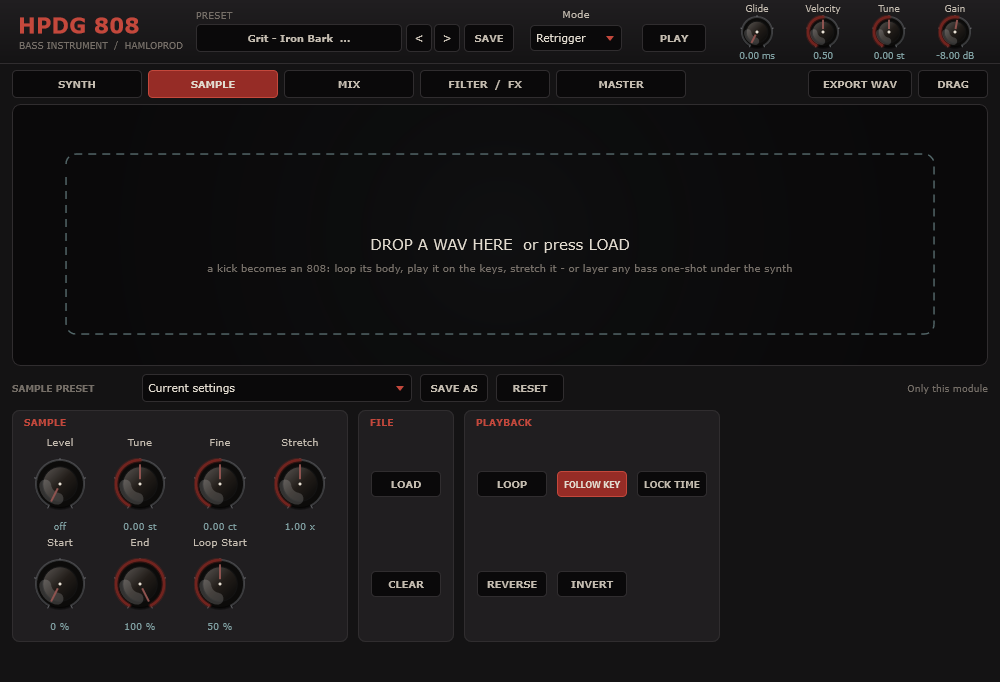
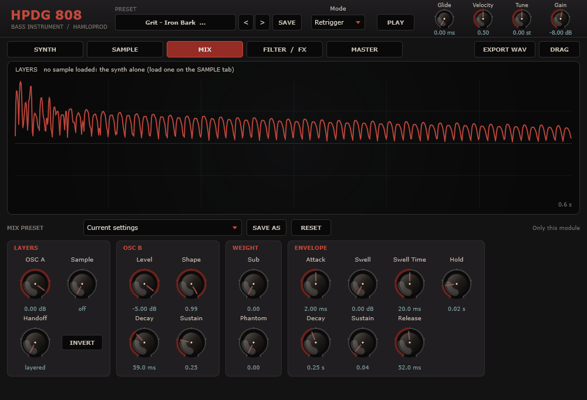

808s and basses ready for a mix, from one plugin. VST3 and Standalone for Windows.

The bass engine of HPDG as a separate instrument: 200 presets by genre and substyle, a mastering section made for bass, and one-click export of the finished sound. Also inside HPDG's Sub808 lane.
Boom Bap, Trap, Rap, Drill, DnB, Techno and Atmospheric, each split into its substyles: Dusty, Jazzy, Dark Trap, Rage, Memphis, Neurofunk, Liquid, Peak Time and more. Clean, levelled, ready to play.
The presets were fitted to over a thousand professional bass one-shots: the punch, the tone and the decay measured, not guessed.
Punch up to 48 semitones, Drive and Saturation, a Tone that follows the note, Tone Fall for a natural decay and Swell for the bloom after the hit.
Sub cut or boost, a mono low end with width above it, stereo harmonics for phones and laptops, a compressor and a limiter: the bass leaves the plugin ready.
Load WAV, AIFF, FLAC, MP3 or OGG. Loop it, play it across the keys, or let a kick hand over to the 808.
Play a note, then drag it onto a track or press Export WAV: a 48 kHz stereo one-shot with the master on it.
Classic, Tape, Tube, Iron, Germanium and Vinyl, with harmonics and mix controls.
Retrigger, Legato and Glide modes for 808 slides, a filter with its own envelope and a tempo-synced LFO.
HPDG owners get the same engine, presets and MASTER on the Sub808 lane, and share their saved presets with the plugin.



